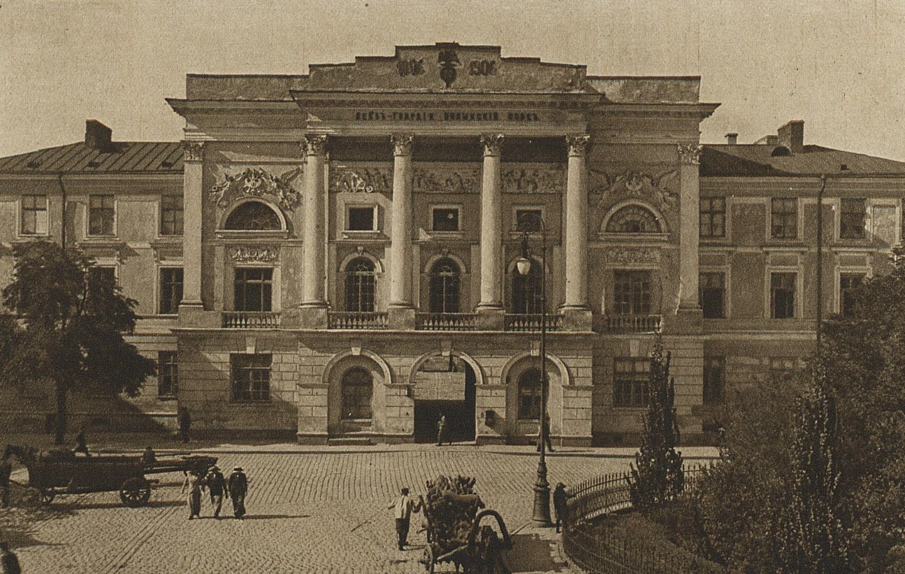
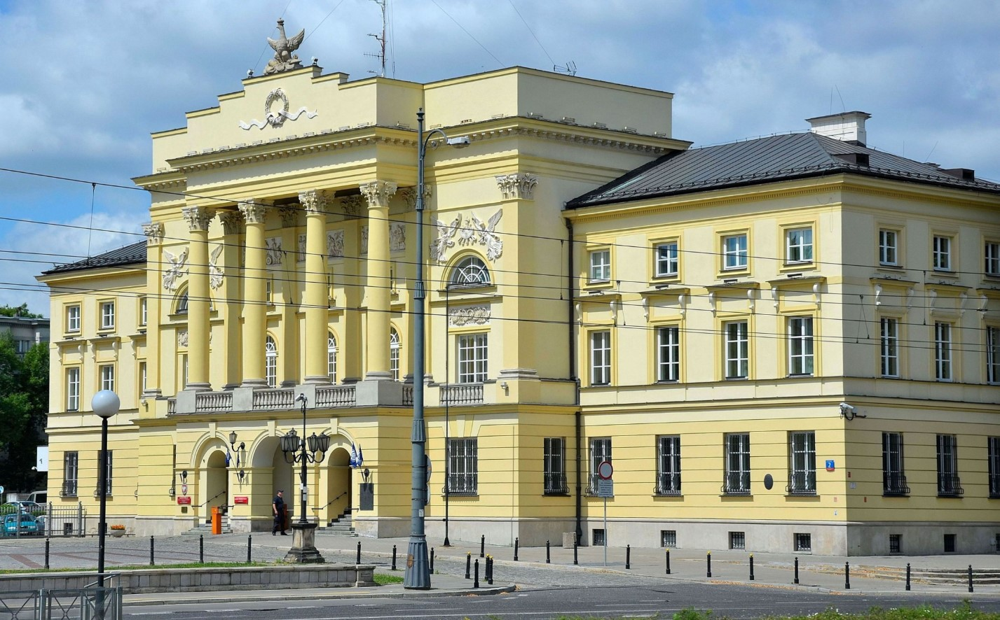

Siedziba posterunku policji
Pałac Mostowskich, zbudowany w stylu neorenesansowym w latach 1888–1893, jest jednym z najbardziej imponujących zabytków architektury w naszym mieście. Od lat pełni funkcję siedziby posterunku policji, będąc centralnym punktem operacyjnym służb bezpieczeństwa.
Historia pałacu sięga XIX wieku, kiedy to został wzniesiony przez rodzinę Mostowskich, bogatych przedsiębiorców i mecenasa sztuki. Jego wyjątkowa architektura przyciąga uwagę mieszkańców oraz turystów, którzy chętnie fotografują tę monumentalną budowlę.
Obecnie pałac pełni funkcję administracyjną i operacyjną posterunku policji, zapewniając profesjonalną obsługę obywateli i utrzymanie porządku publicznego w okolicach centrum miasta.